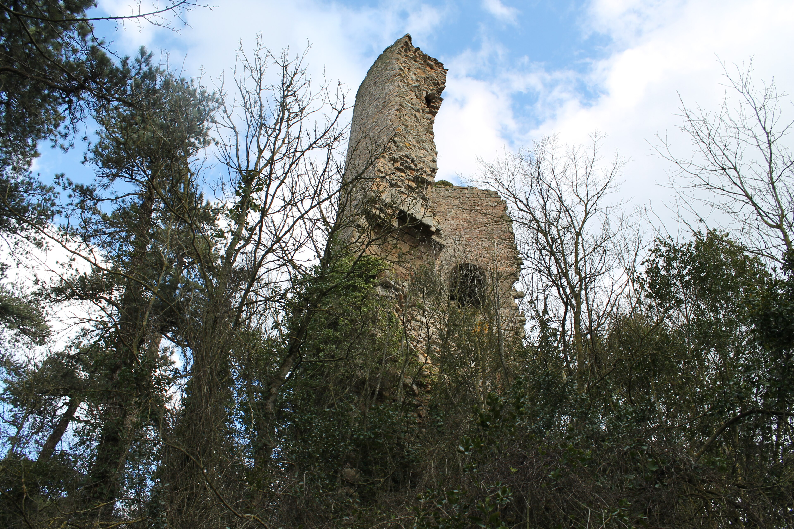
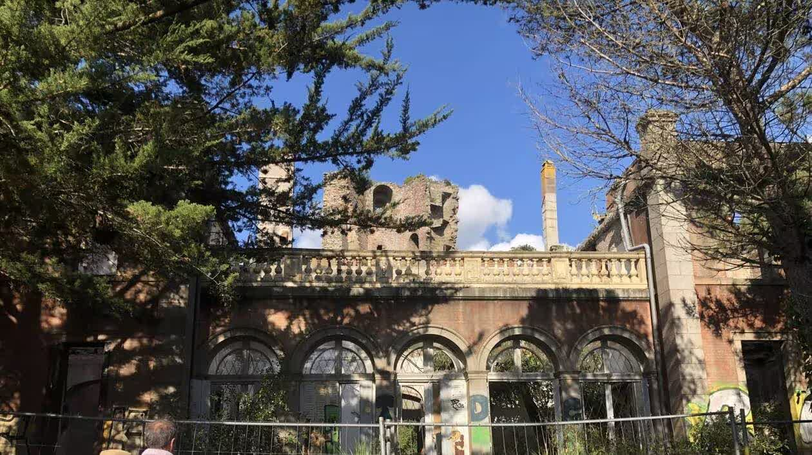
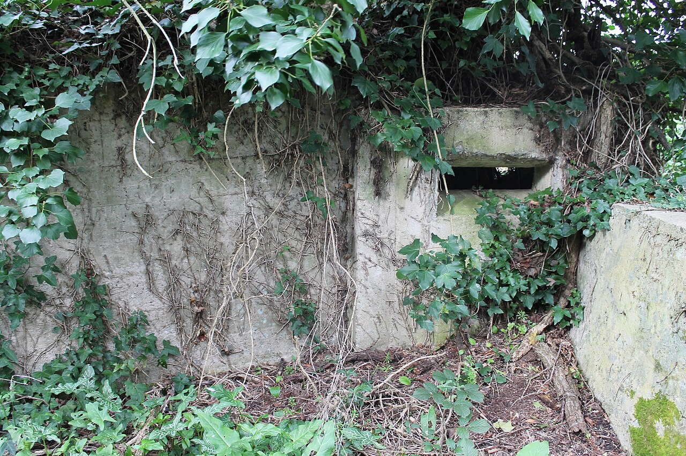
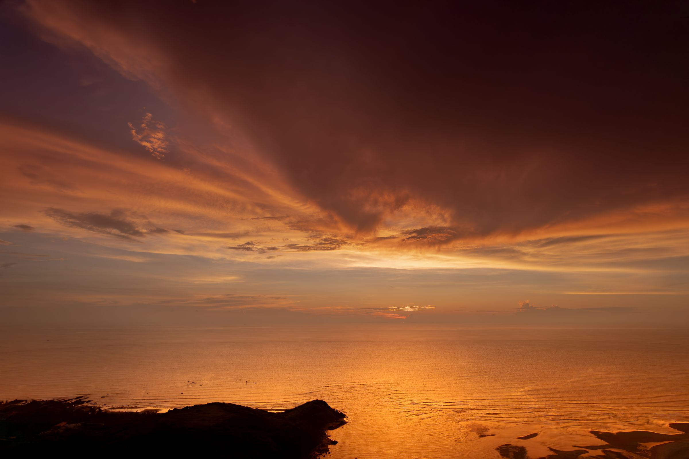

Domaine de la Tour de Cesson · Saint-Brieuc
Ouvert tous les jours, 8h - 20h. Accès au domaine gratuit.
Bientôt à Amer
Musique live, buvette, soleil. Le domaine s'anime pour la deuxième fois.
Gratuit, don libre → ven. 31 octobreParcours nocturne, escape game dans les casemates, contes au pied de la tour.
8€ / 5€ enfant → 6 - 7 décembreArtisans, huîtres du Légué, cidre chaud, la tour illuminée.
Entrée libre →Le lieu
Six siècles de passages. Ducs de Bretagne, député républicain, soldats du Mur de l'Atlantique, et maintenant nous. Mais bien avant tout ça, la tour servait déjà de repère aux marins qui naviguaient en baie de Saint-Brieuc. Un point fixe sur la côte. Un amer.
Plonger dans l'histoire →



Debout depuis 1395.
Six siècles de tempêtes et de couchers de soleil sur la baie.
Le domaine a besoin de bras
Chaque été, des bénévoles venus de partout restaurent le domaine avec les techniques d'autrefois. Deux semaines, les mains dans la chaux, les pieds dans l'herbe, et le soir on regarde le soleil tomber dans la baie.
Rejoindre un chantier →10€ pour devenir membre. Un don libre pour aider. Du mécénat si vous êtes une entreprise du coin. Tout passe par HelloAsso, c'est simple, c'est direct.
Soutenir Amer →Sur le vif